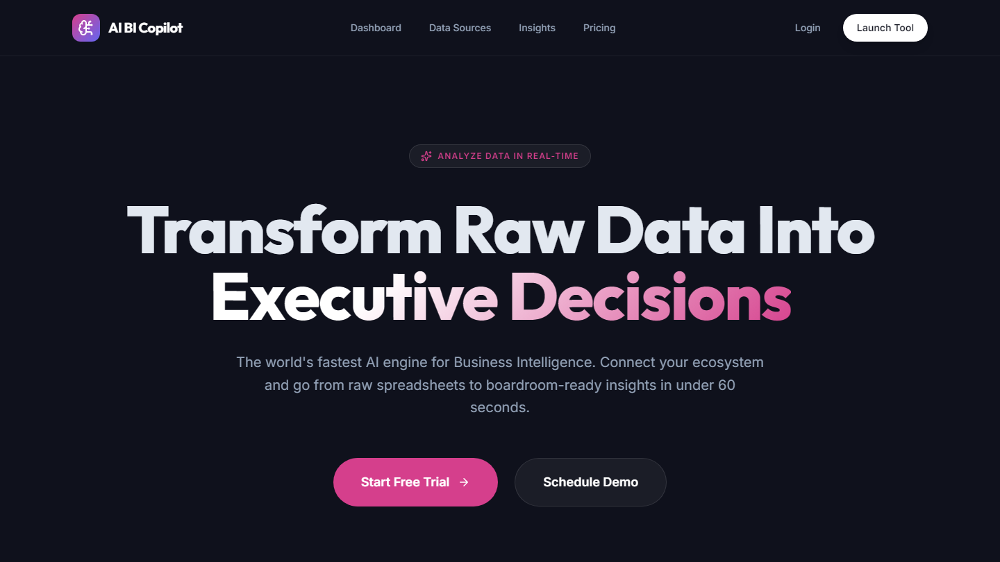
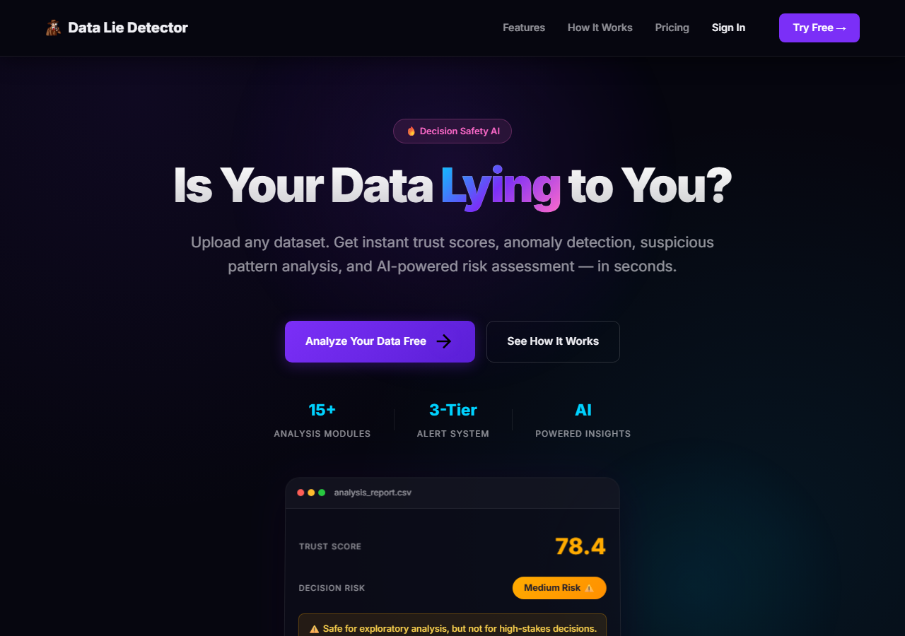
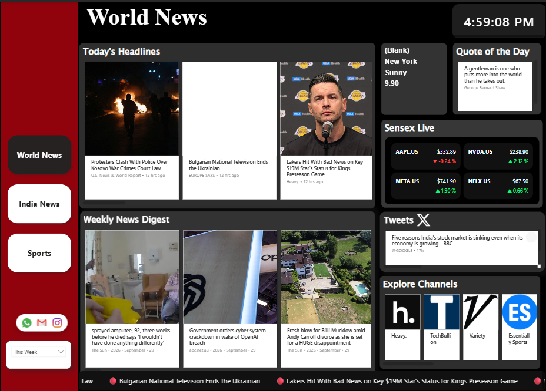
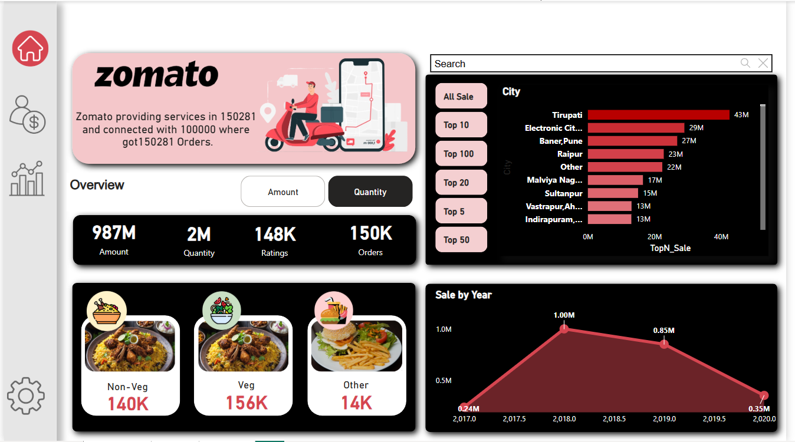
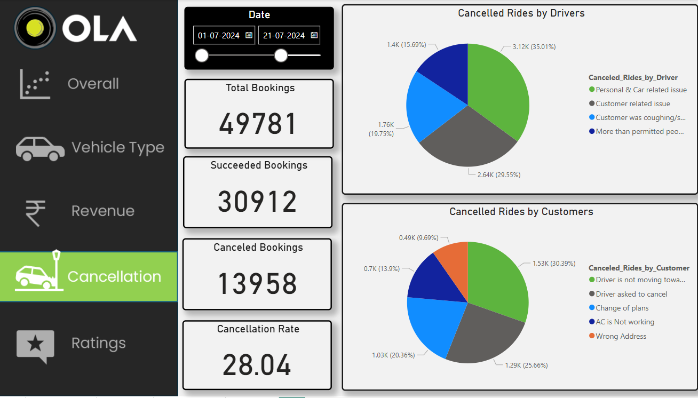
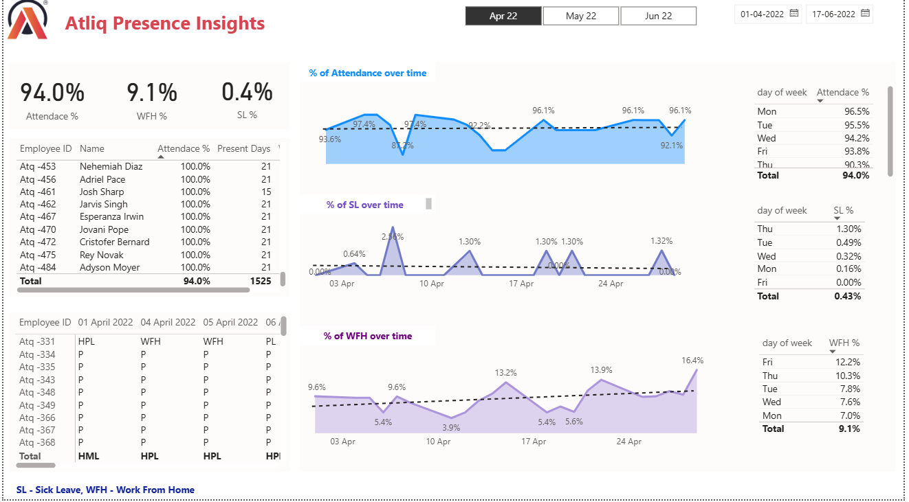
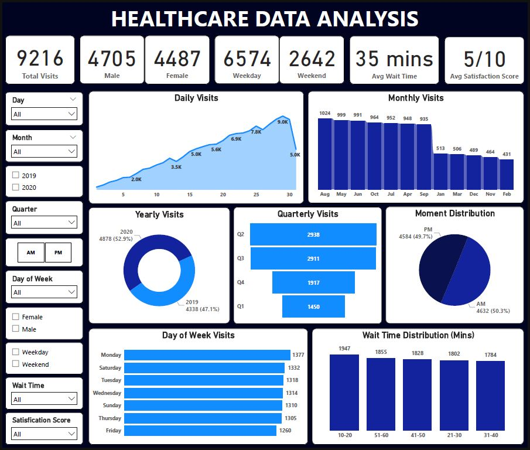

Turning enterprise data into decisions — Power BI migrations for Warner Bros. Discovery, AI-powered tools that cut delivery time by 98%, and production dashboards for J&J MedTech.
Full-time at InCredo Technologies since 2025 — from SQL scripting to enterprise BI migrations and LLM-powered automation.
AI tools, enterprise BI migrations, and data dashboards — built and shipped in production.

LLM-powered analytics platform integrating NVIDIA NIM & LangChain across 4 data source types — CSV, SQL Server, MySQL, and live Power BI. Non-technical users ask questions in natural language and receive executive-ready insights in seconds. Deployed at J&J MedTech, cutting reporting cycles from 3 hours to under 2 minutes.
Upload any CSV and instantly receive an automated data integrity diagnostic — trust scores, anomaly flagging, suspicious pattern detection, and decision-safety verdicts. Includes 15+ automated analysis modules, multi-file comparison, and one-click PDF export.

2 production Power BI dashboards tracking 6 KPI areas across resource management and product portfolio. Enforced RLS and role-based access for enterprise compliance.
Rebuilt 15+ SAP BusinessObjects reports in Power BI. 3-step validation process achieving zero-defect UAT sign-off for coordinated overseas go-live.

News AnalyticsAPI-driven Power BI dashboard pulling live news data — multilingual coverage, historical data storage, Sensex live feed, and real-time Twitter/X integration via REST APIs.

Zomato AnalyticsSales performance, user behavior, and city-wise trends. Top cities, order categories, and gender/age-wise user demographics.

OLA AnalyticsBooking volume, revenue, vehicle types, cancellations, and ratings. Booking status breakdown and ride trends over time.

HR AnalyticsHeadcount, attrition rate, gender diversity, and hiring trends. Data-driven insights to support HR decisions and workforce planning.

Healthcare Analytics9,216 patient visits — demographics, wait times, satisfaction scores, and department referrals. Trends across weekdays, quarters, and age groups.
Logistic regression with scikit-learn — data preprocessing, under-sampling for class imbalance, feature scaling, and accuracy evaluation on Kaggle dataset.
Proficient across the full BI stack — from data modeling to LLM integration.
Core coursework in biomedical signal processing, physiological data modeling, and statistical analytics. Built analytical foundations applied to clinical metrics, healthcare data systems, and published scientific research.
Open to Data Analyst, BI Developer, and AI/Data Science roles. I move fast, ship clean, and bring AI to the table.